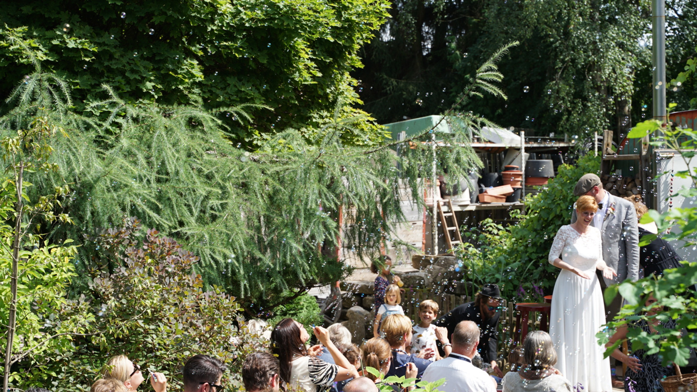
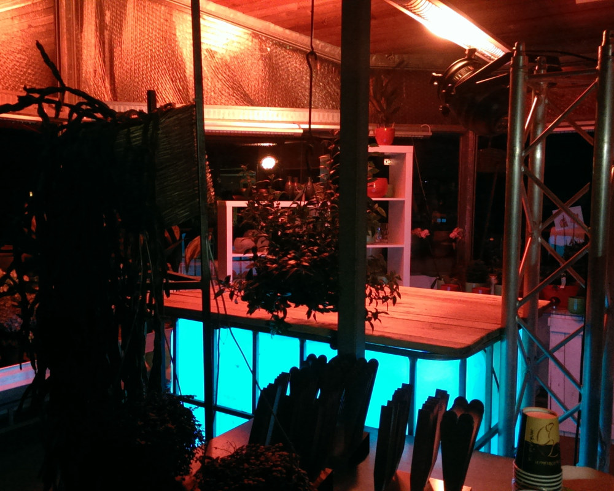
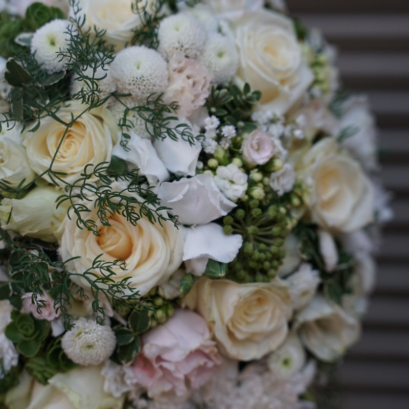
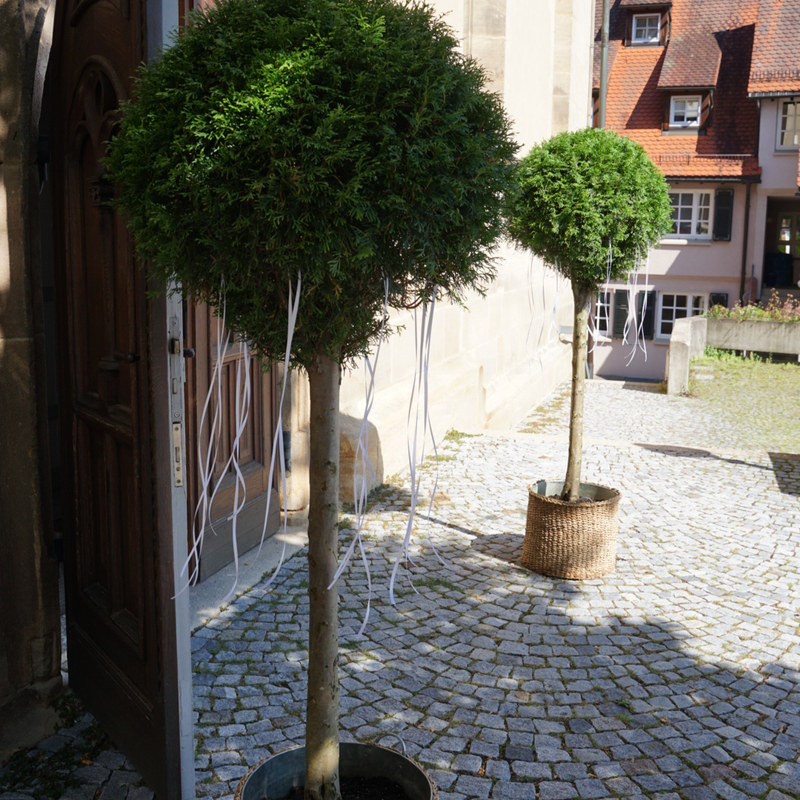
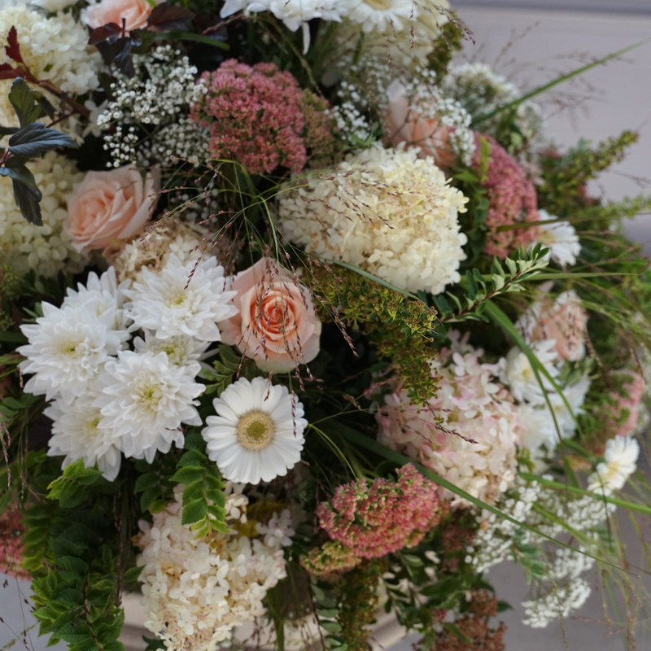
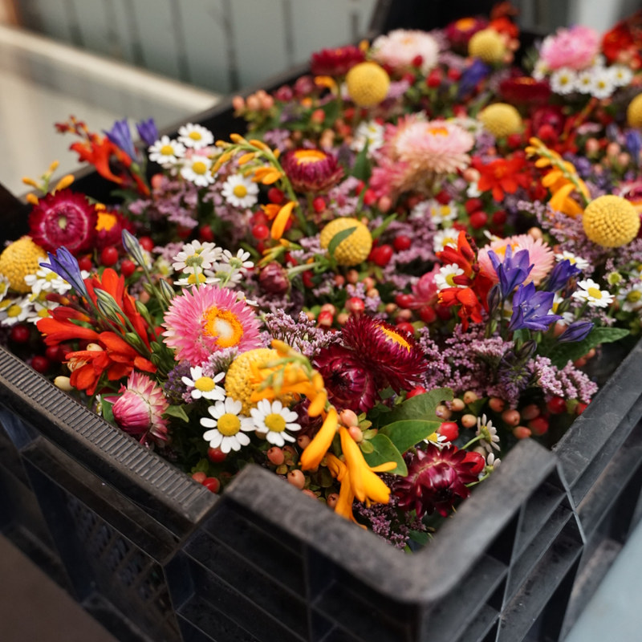
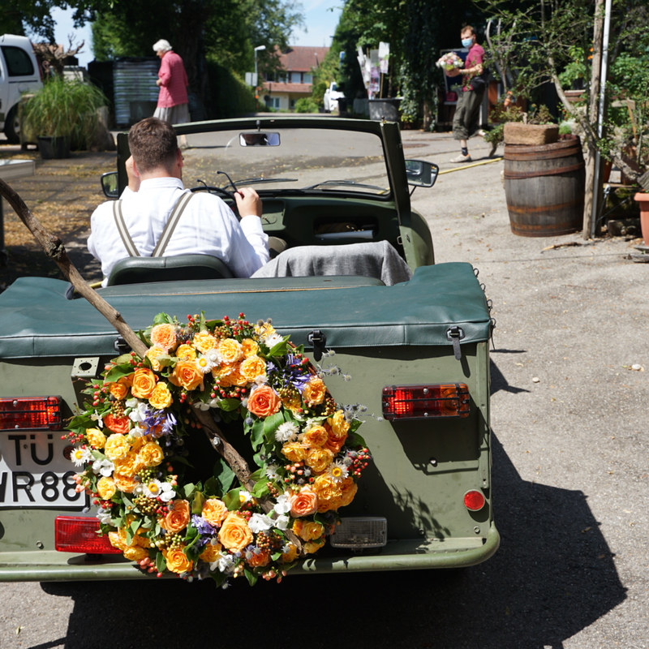

Floristik & Sträuße
Handgebundene Sträuße für jeden Anlass – Geburtstag, Muttertag, Jubiläum, Dankeschön oder einfach so. Frisch, saisonal und individuell zusammengestellt.
→ Mehr zur Floristik
Gärtnerei & Blumenfachgeschäft seit über 30 Jahren
Vom handgebundenen Strauß über Hochzeits- und Trauerfloristik bis zu Pflanzen, Kräutern und Dauergrabpflege. Alles aus einer Hand – persönlich von Sven Kornherr.
Herzlich willkommen
Bei der Floralen Schmiede bekommen Sie beides unter einem Dach: das gärtnerische Wissen einer Endverkaufsgärtnerei und die Handschrift eines gelernten Floristen. Viele Fachsparten, eine Person – jeder Strauß, jedes Gesteck und jede Bepflanzung entsteht persönlich. Kein Fließband, keine Stangenware, sondern echtes Handwerk aus dem Landkreis Tübingen.
Was wir für Sie tun
Von der spontanen Blumenfreude bis zum geplanten Großauftrag – sprechen Sie mich einfach an.
Handgebundene Sträuße für jeden Anlass – Geburtstag, Muttertag, Jubiläum, Dankeschön oder einfach so. Frisch, saisonal und individuell zusammengestellt.
→ Mehr zur Floristik
Brautstrauß, Anstecker, Tisch- und Kirchenschmuck bis zur Autodeko – stimmig aufeinander abgestimmt für Ihren großen Tag in Dettenhausen, Tübingen und Umgebung.
→ Mehr zur Hochzeit
Kränze, Sarg- und Urnengestecke, Trauersträuße und Grabschmuck – würdevoll gestaltet. Direkt am Friedhof gelegen, auch kurzfristig für Sie da.
→ Mehr zur Trauerfloristik
Stauden, Beet- & Balkonpflanzen, Gehölze aus eigener Baumschule und Gemüsejungpflanzen – persönlich beraten, je nach Jahreszeit frisch vor Ort.
→ Zur Gärtnerei
Von der Neuanlage bis zur dauerhaften Pflege über Jahre – auf Wunsch mit Treuhandvertrag. Wir kümmern uns, damit die Grabstätte immer gepflegt aussieht.
→ Mehr zur Dauergrabpflege
Heilpflanzen, Kräuter, Beerensträucher, Obstgehölze und tropische Raritäten – „Kräuterbeet to go" und Essbares für Garten und Balkon.
→ Zum SortimentGärtnerei
Als Endverkaufsgärtnerei ziehen und verkaufen wir Pflanzen direkt – das heißt für Sie: kurze Wege, frische Ware und ehrliche Beratung von jemandem, der seine Pflanzen kennt.
Hochzeit
Vom Brautstrauß bis zur kompletten Location-Deko – florale Begleitung, die zu Ihnen passt. Und weil unsere Pflanzen aus eigener Gärtnerei kommen, sind wir flexibel und frisch.
Im Einzugsgebiet Dettenhausen, Tübingen, Walddorfhäslach, Waldenbuch & Nürtingen.
Hochzeitstermin anfragenTrauer & Abschied
In einer schweren Zeit nehmen wir Ihnen gern etwas ab. Unsere Gärtnerei liegt unmittelbar am Friedhof Dettenhausen – so sind wir schnell und unkompliziert für Sie da, auch kurzfristig.

Location & Veranstaltungen
Unsere Location ist mehr als eine Gärtnerei: Der stimmungsvolle Raum lässt sich für Ihre Feier mieten – im grünen Ambiente, persönlich und individuell.
Auf Wunsch passend dekoriert und floral gestaltet – alles aus einer Hand. Erzählen Sie mir von Ihrem Anlass, gemeinsam finden wir den richtigen Rahmen.
Mehr zur LocationIch bin…
Warum ich den Betrieb Florale Schmiede nenne? Neben meiner Kreativität, meinem Individualismus und meiner Flexibilität übe ich mit viel Hingabe meinen handwerklichen Beruf aus. Dabei achte ich auf das schon Vorhandene und nutze meine Fähigkeit, aus wenig viel zu erreichen.
Meine fachliche Kompetenz stützt sich auf über 30 Jahre Erfahrung als aus- und weitergebildeter Gärtner und Florist. Den Betrieb führe ich inzwischen als Fachkraft alleine – und decke noch immer viele Fachsparten ab, von der Gärtnerei bis zur Floristik.
Damit das gelingt, freue ich mich über etwas Vorlauf: Mit ein wenig planerischem Vordenken kann ich ganz oft, ganz toll helfen. Sprechen Sie mich an oder schreiben Sie mir – gerne setze ich gemeinsam mit Ihnen Ihre Vorstellungen um.
Ihr Floraler Schmied – Sven Kornherr
Lieferung & Einzugsgebiet
Sie wohnen nicht in der Nähe oder möchten jemandem eine Freude machen? Als Fleurop-Partner versenden wir Blumengrüße in ganz Deutschland. Regional liefern und beraten wir in Dettenhausen, Tübingen, Walddorfhäslach, Waldenbuch, Nürtingen und Umgebung.
Eindrücke
Ein kleiner Einblick in Sträuße, Gestecke und florale Arbeiten der Floralen Schmiede.








Kontakt
Der Außenbereich der Gärtnerei ist oft länger geöffnet – und im Trauerfall bin ich auch außerhalb der Zeiten gerne für Sie da. Ein kurzer Anruf lohnt sich immer.
Gärtnerei Zimmermann FLORALE SCHMIEDE e.K.
Inh. Sven Kornherr
📍 Kirchstraße 32, 72135 Dettenhausen (beim Friedhof)
📠 07157 / 64789
Kommen Sie vorbei oder rufen Sie an – ich freue mich auf Sie.